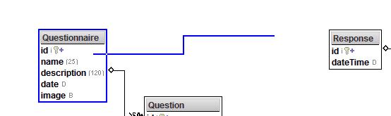

Workspace / Desktop
The workspace area is used to visually create and modify models.
The yellow box shows the docking button that can be used to maximize the workspace.
The workspace toolbar for managing models.
The Autocomplete textfield is for quickly finding an object by name.
This also support finding any property, by using a "." after the object name.
Example: "Employe.fir" will show all employee info that begins with 'fir'
Choose a color for the selected object(s).
Choose alignment and sizing options.
Within the workspace is a desktop area for managing one or more models.

Multiple objects can be selected by "rubber-band" selecting them.
Click and hold the button down while moving the mouse.
Selected Objects can then be moved/dragged.
By right-clicking on the space, a popup menu of choices can be used to organize.
Right-clicking on an object, will display the menu of choices.
Choosing the "create new link ..." will allow you to link to another object.
Choosing the "split object ..." will allow you to move properties from the selected object to another object.
Right-clicking on a link (line) between two objects will display this menu.
Choosing the workspace toolbar link button will allow you to connect two object together.

Print preview of the model
Print preview will split the objects onto multiple pages.